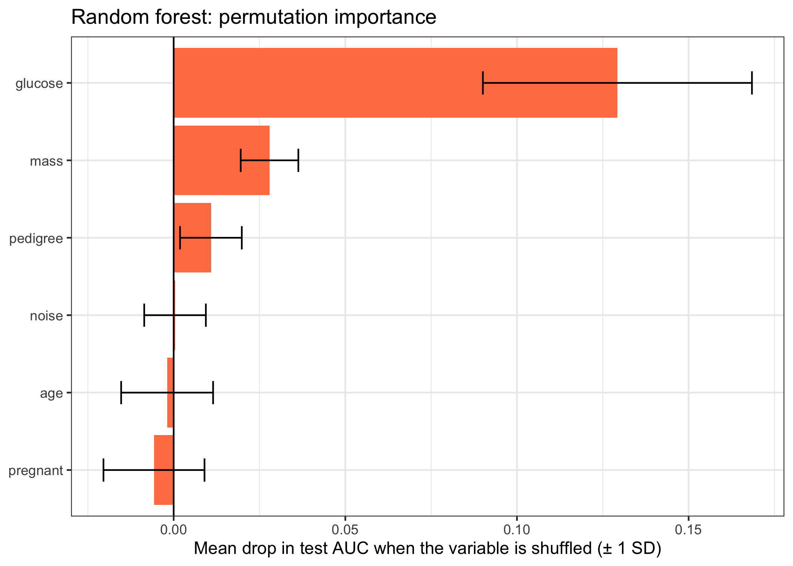
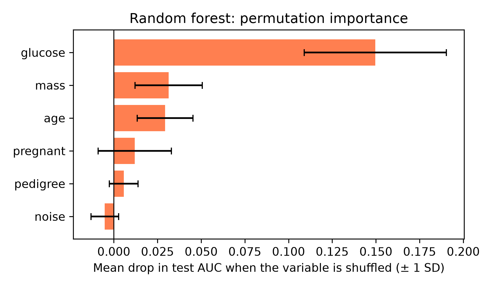

# Packages for this exercise. If one is missing, remove the # and run this line once:
# install.packages(c("tidyverse", "tidymodels", "ranger", "vip"))
library(tidyverse)
library(tidymodels)
library(vip) # variable importance for many kinds of model
theme_set(theme_bw()) # white background for every plot
options(pillar.sigfig = 3) # show three significant figures in tablesExercise 9.1 — Variable importance, and a column of pure noise
Day 5 ended with a random forest that predicts diabetes well but cannot be read like a tree or a logistic regression. The first question everyone asks of such a model is: which variables does it use? This exercise answers it in two ways, and then tests both with a column we know to be useless.
NoteThe plots are for looking at
The code for every plot is folded away just above it, in case you are curious, and all of it is in the notebook linked at the top of each tab. You are not expected to write it yourself.
Download this exercise as an R Markdown notebook (.Rmd): the text and every code cell of the R version, including the code for the plots, with the blanks left for you to fill in. Open it in RStudio and run it a chunk at a time.
Packages and data
Part 1 — The forest
The same 750 people and five predictors as Day 5, from data/diabetes_clean.csv: number of pregnancies, glucose, BMI (mass), the diabetes pedigree function and age. As always, 80% of the people are used for training and 20% are held back as the test set.
diabetes <- read_csv("data/diabetes_clean.csv") |>
select(pregnant, glucose, mass, pedigree, age, diabetes) |>
mutate(diabetes = factor(diabetes, levels = c("neg", "pos")))
set.seed(42)
split <- initial_split(diabetes, prop = 0.8)
train <- training(split)
test <- testing(split)A random forest of 500 trees, as on Day 5. importance = "impurity" asks ranger to keep a record of how much each variable helped while it grows the trees; Part 2 reads it. A forest is random, so set the seed first.
rf_spec <- rand_forest(trees = 500) |>
set_engine("ranger", importance = "impurity") |>
set_mode("classification")
set.seed(1)
rf_fit <- rf_spec |> fit(diabetes ~ ., data = train)
test_preds <- test |>
bind_cols(predict(rf_fit, new_data = test, type = "prob"),
predict(rf_fit, new_data = test))
roc_auc(test_preds, truth = diabetes, .pred_pos, event_level = "second")#> # A tibble: 1 × 3
#> .metric .estimator .estimate
#> <chr> <chr> <dbl>
#> 1 roc_auc binary 0.753The test AUC is 0.753. This is the model we explain all day. Python grows different random trees, so its numbers differ slightly.
Part 2 — Impurity importance
Impurity importance adds up, for each variable, how much purer its splits made the training rows, over all the trees. The forest works it out while it is fitted, so it is free. vi() from the vip package reads it. ranger reports a raw total; divide by the sum to get each variable’s share.
vi(rf_fit) |>
mutate(share = Importance / sum(Importance))#> # A tibble: 5 × 3
#> Variable Importance share
#> <chr> <dbl> <dbl>
#> 1 glucose 80.2 0.373
#> 2 mass 39.2 0.182
#> 3 age 35.2 0.164
#> 4 pedigree 34.7 0.162
#> 5 pregnant 25.5 0.119Glucose has 0.373 of the total, then BMI 0.182, age 0.164, pedigree 0.162 and pregnancies 0.119. Glucose comes first by a long way.
Part 3 — Permutation importance
Permutation importance asks a different question: how much worse is the model on the test rows if one variable is scrambled? Shuffle one column so its values land on the wrong people, predict again, and see how much the AUC drops. The model is not refitted.
# Replace every ______ below, then run this cell.
set.seed(1)
test_shuffled <- test |>
mutate(glucose = sample(______)) # glucose now belongs to someone else
test_shuffled |>
bind_cols(predict(rf_fit, new_data = ______, type = "prob")) |>
roc_auc(truth = diabetes, .pred_pos, event_level = "second")
TipStuck?
sample(glucose) returns the same glucose values in a random order. Then predict on the shuffled test rows, test_shuffled.
One shuffle is one random draw, so in Part 4 we repeat it 20 times for each variable and take the average drop.
Part 4 — A control: a column of pure noise
Which measure should we believe? Test both on something whose answer we already know: data/diabetes_noise.csv is the same file with one more column, noise: random numbers unrelated to anything. Its true importance is zero.
Read it, keep noise as a sixth predictor, and split it exactly as before. The same seed gives the same people in the test set.
diabetes_noise <- read_csv("data/diabetes_noise.csv") |>
select(pregnant, glucose, mass, pedigree, age, noise, diabetes) |>
mutate(diabetes = factor(diabetes, levels = c("neg", "pos")))
set.seed(42)
split_noise <- initial_split(diabetes_noise, prop = 0.8)
train_noise <- training(split_noise)
test_noise <- testing(split_noise)Fit the same forest on these training rows and look at its impurity importance.
# Replace every ______ below, then run this cell.
set.seed(1)
rf_noise <- rf_spec |> fit(diabetes ~ ., data = ______)
vi(rf_noise) |>
mutate(share = Importance / sum(Importance))
TipStuck?
Use the training rows that contain the new column, train_noise. The formula diabetes ~ . picks up noise by itself.
Now the permutation importance of the same forest on the test rows. The loop does what you did in Part 3, 20 times for each of the six variables. Read it line by line; it takes a few seconds.
auc_before <- test_noise |>
bind_cols(predict(rf_noise, new_data = test_noise, type = "prob")) |>
roc_auc(truth = diabetes, .pred_pos, event_level = "second") |>
pull(.estimate)
set.seed(1)
perm_results <- data.frame() # one row per shuffle
for (variable in c("pregnant", "glucose", "mass", "pedigree", "age", "noise")) {
for (repeat_number in 1:20) {
test_shuffled <- test_noise
test_shuffled[[variable]] <- sample(test_shuffled[[variable]])
auc_after <- test_shuffled |>
bind_cols(predict(rf_noise, new_data = test_shuffled, type = "prob")) |>
roc_auc(truth = diabetes, .pred_pos, event_level = "second") |>
pull(.estimate)
perm_results <- bind_rows(perm_results,
data.frame(variable = variable,
auc_drop = auc_before - auc_after))
}
}
perm_importance <- perm_results |>
group_by(variable) |>
summarise(importance = mean(auc_drop), sd = sd(auc_drop)) |>
arrange(desc(importance))
perm_importance#> # A tibble: 6 × 3
#> variable importance sd
#> <chr> <dbl> <dbl>
#> 1 glucose 0.129 0.0392
#> 2 mass 0.0279 0.00840
#> 3 pedigree 0.0109 0.00899
#> 4 noise 0.000402 0.00898
#> 5 age -0.00190 0.0134
#> 6 pregnant -0.00573 0.0147Code for this plot (optional)
perm_importance |>
ggplot(aes(x = importance, y = reorder(variable, importance))) +
geom_col(fill = "coral") +
geom_errorbar(aes(xmin = importance - sd, xmax = importance + sd),
width = 0.3, orientation = "y") +
geom_vline(xintercept = 0) +
labs(x = "Mean drop in test AUC when the variable is shuffled (± 1 SD)",
y = NULL, title = "Random forest: permutation importance")
noise comes out at 0.0004, with a standard deviation of 0.009: zero, as it should. Only glucose (0.129) and BMI (0.028) clearly beat it. The pedigree function (0.011) is within about one standard deviation of it, and age and pregnancies come out slightly below it: the forest predicts new people no better with them than without.
Why the difference? Deep trees always find some split on a column with many different values that tidies up a few training rows. Impurity importance counts that; permutation importance on new people does not. So a variable that does not clearly beat noise should not be called important.
TipKey points
- Impurity importance is free and quick, but it is computed on the training rows and is biased: it gave pure noise 13% of the total.
- Permutation importance is the drop in test AUC when one column is shuffled. Repeat the shuffle and report the mean and spread.
- A noise column is a control: its true importance is zero, and permutation importance puts it there.
Download this exercise as a Jupyter notebook (.ipynb): the text and every code cell of the Python version, including the code for the plots, with the blanks left for you to fill in. Open it in Jupyter or VS Code and run it a cell at a time.
Packages and data
# Packages for this exercise. If one is missing, install it once from a terminal
# (in a Jupyter notebook, type %pip instead of pip):
# pip install pandas numpy matplotlib scikit-learn
import pandas as pd
import numpy as np
import matplotlib.pyplot as plt
from sklearn.ensemble import RandomForestClassifier
from sklearn.model_selection import train_test_split
from sklearn.metrics import roc_auc_score
from sklearn.inspection import permutation_importancePart 1 — The forest
The same 750 people and five predictors as Day 5, from data/diabetes_clean.csv: number of pregnancies, glucose, BMI (mass), the diabetes pedigree function and age. As always, 80% of the people are used for training and 20% are held back as the test set.
diabetes = pd.read_csv("data/diabetes_clean.csv")
diabetes = diabetes[["pregnant", "glucose", "mass", "pedigree", "age", "diabetes"]]
diabetes["diabetes"] = (diabetes["diabetes"] == "pos").astype(int) # 1 = pos, 0 = neg
predictors = ["pregnant", "glucose", "mass", "pedigree", "age"]
train, test = train_test_split(diabetes, test_size=0.2, random_state=42)A random forest of 500 trees, as on Day 5. scikit-learn keeps a record of how much each variable helped while it grows the trees; Part 2 reads it. A forest is random, so fix random_state.
rf = RandomForestClassifier(n_estimators=500, random_state=1)
rf = rf.fit(train[predictors], train["diabetes"])
test_prob = rf.predict_proba(test[predictors])[:, 1] # probability of diabetes
round(roc_auc_score(test["diabetes"], test_prob), 3)#> 0.794The test AUC is 0.794. This is the model we explain all day. R grows different random trees, so its numbers differ slightly.
Part 2 — Impurity importance
Impurity importance adds up, for each variable, how much purer its splits made the training rows, over all the trees. The forest works it out while it is fitted, so it is free. scikit-learn stores it in feature_importances_, one number per predictor, already scaled to add up to 1.
impurity_importance = pd.Series(rf.feature_importances_, index=predictors)
impurity_importance.sort_values(ascending=False).round(3)#> glucose 0.318
#> mass 0.205
#> pedigree 0.198
#> age 0.169
#> pregnant 0.109
#> dtype: float64Glucose has 0.318 of the total, then BMI 0.205, pedigree 0.198, age 0.169 and pregnancies 0.109. Glucose comes first by a long way.
Part 3 — Permutation importance
Permutation importance asks a different question: how much worse is the model on the test rows if one variable is scrambled? Shuffle one column so its values land on the wrong people, predict again, and see how much the AUC drops. The model is not refitted.
# Replace every ______ below, then run this cell.
rng = np.random.default_rng(1)
test_shuffled = test.copy()
test_shuffled["glucose"] = rng.permutation(test_shuffled[______].values) # glucose now belongs to someone else
shuffled_prob = rf.predict_proba(______[predictors])[:, 1]
round(roc_auc_score(test_shuffled["diabetes"], shuffled_prob), 3)
TipStuck?
rng.permutation() returns the same glucose values in a random order. Then predict on the shuffled test rows, test_shuffled.
One shuffle is one random draw, so in Part 4 we repeat it 20 times for each variable and take the average drop.
Part 4 — A control: a column of pure noise
Which measure should we believe? Test both on something whose answer we already know: data/diabetes_noise.csv is the same file with one more column, noise: random numbers unrelated to anything. Its true importance is zero.
Read it, keep noise as a sixth predictor, and split it exactly as before. The same random_state gives the same people in the test set.
diabetes_noise = pd.read_csv("data/diabetes_noise.csv")
diabetes_noise["diabetes"] = (diabetes_noise["diabetes"] == "pos").astype(int)
predictors_noise = predictors + ["noise"]
train_noise, test_noise = train_test_split(diabetes_noise, test_size=0.2, random_state=42)Fit the same forest on these training rows and look at its impurity importance.
# Replace every ______ below, then run this cell.
rf_noise = RandomForestClassifier(n_estimators=500, random_state=1)
rf_noise = rf_noise.fit(train_noise[______], train_noise["diabetes"])
pd.Series(rf_noise.feature_importances_, index=predictors_noise).sort_values(ascending=False).round(3)
TipStuck?
The forest now uses all six predictors, predictors_noise.
Now the permutation importance of the same forest on the test rows. permutation_importance() does what you did in Part 3, 20 times for each of the six variables, with scoring="roc_auc".
perm = permutation_importance(rf_noise, test_noise[predictors_noise],
test_noise["diabetes"], scoring="roc_auc",
n_repeats=20, random_state=1)
perm_importance = pd.DataFrame({"variable": predictors_noise,
"importance": perm.importances_mean,
"sd": perm.importances_std})
perm_importance = perm_importance.sort_values("importance", ascending=False)
perm_importance.round(3)#> variable importance sd
#> 1 glucose 0.150 0.041
#> 2 mass 0.031 0.019
#> 4 age 0.029 0.016
#> 0 pregnant 0.012 0.021
#> 3 pedigree 0.006 0.008
#> 5 noise -0.005 0.008Code for this plot (optional)
ordered = perm_importance.sort_values("importance")
fig, ax = plt.subplots(figsize=(6, 3.5))
ax.barh(ordered["variable"], ordered["importance"], xerr=ordered["sd"],
color="coral", capsize=3)
ax.axvline(0, color="black", linewidth=0.8)
ax.set_xlabel("Mean drop in test AUC when the variable is shuffled (± 1 SD)")
ax.set_title("Random forest: permutation importance")
fig.tight_layout()
plt.show()
noise comes out at −0.005, with a standard deviation of 0.008: zero, as it should. Glucose (0.150), BMI (0.031) and age (0.029) clearly beat it. Pregnancies (0.012) and the pedigree function (0.006) are within about one standard deviation of it.
Why the difference? Deep trees always find some split on a column with many different values that tidies up a few training rows. Impurity importance counts that; permutation importance on new people does not. So a variable that does not clearly beat noise should not be called important.
TipKey points
- Impurity importance is free and quick, but it is computed on the training rows and is biased: it gave pure noise 15% of the total.
- Permutation importance is the drop in test AUC when one column is shuffled. Repeat the shuffle and report the mean and spread.
- A noise column is a control: its true importance is zero, and permutation importance puts it there.